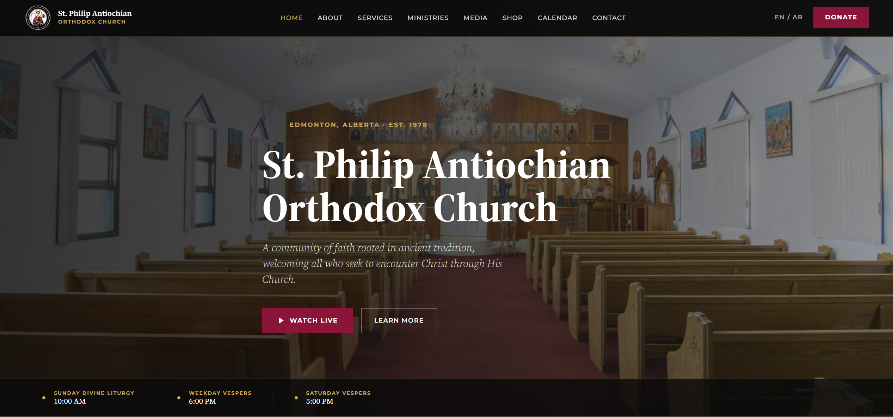
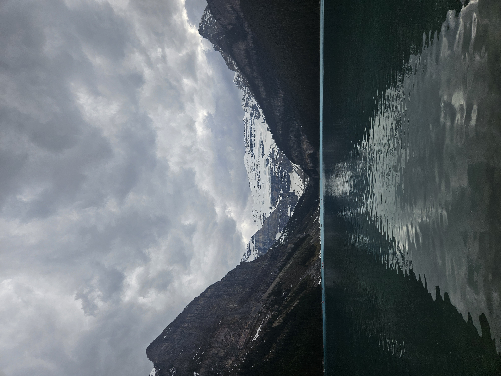

Web Capstone Project
A real-client website redesign for St. Philip Antiochian Orthodox Church, focused on improving usability, visual hierarchy, and overall site structure.
View ProjectUI / UX Designer
Welcome to my Web Portfolio, I’m Shalom Akhou, a UI/UX designer and web design student focused on creating websites that feel modern, intentional, and easy to use.
Quick Introduction
I’m currently building my skills in web design and development through hands-on projects involving HTML, CSS, JavaScript, WordPress, wireframing, and visual branding. I enjoy creating work that combines functionality with strong visual identity.
Featured Work

A real-client website redesign for St. Philip Antiochian Orthodox Church, focused on improving usability, visual hierarchy, and overall site structure.
View Project
A curated selection of photography showcasing my eye for composition, contrast, atmosphere, and visual storytelling.
View Project